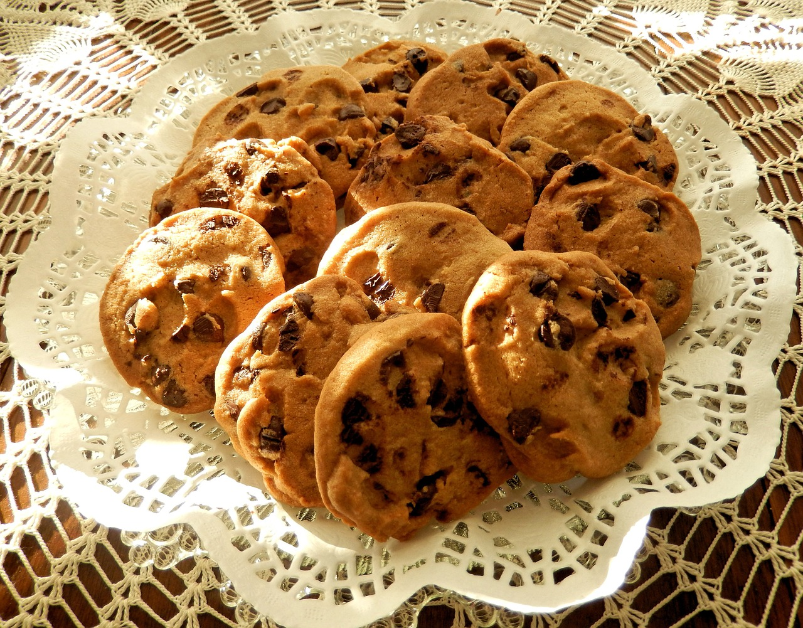
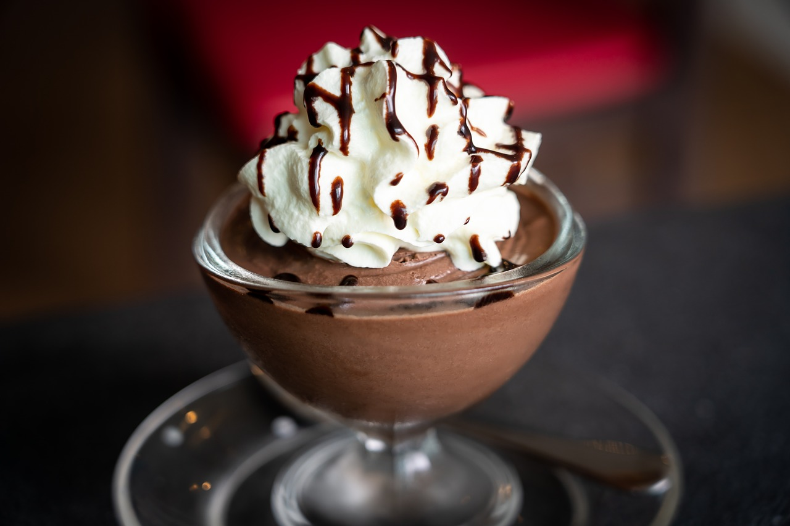
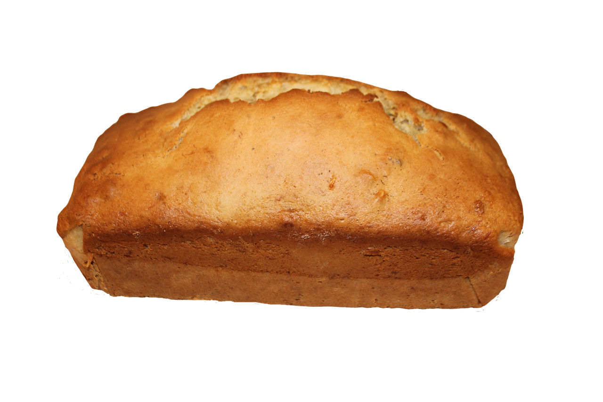

My 3 Favorite Dessert Recipes
Annette Jääskeläinen
Menu
Chocolate Chip Cookies
Pixabay License
Free for commercial use
No attribution required

Directions
-
Preheat oven to 375° F.
- Combine flour, baking soda and salt in small bowl. Beat butter, granulated sugar, brown sugar and vanilla extract in large mixer bowl until creamy. Add eggs, one at a time, beating well after each addition. Gradually beat in flour mixture. Stir in morsels and nuts. Drop by rounded tablespoon onto ungreased baking sheets.
-
Bake for 9 to 11 minutes or until golden brown. Cool on baking sheets for 2 minutes; remove to wire racks to cool completely.
Chocolate Mousse
Pixabay License
Free for commercial use
No attribution required

Directions
- In a chilled mixing bowl, begin whipping cream. Whip until frothy and slightly thicken.
- Add powdered sugar and cocoa powder. Carefully mix until soft peaks form.
- Add almond extract if desired. Whip until stiff peaks form.
- Spoon into plastic bag or piping bag with piping tip. Pip into serving bowls or glasses.
Banana Bread
Pixabay License
Free for commercial use
No attribution required

Directions
- Preheat oven to 325°F. Grease a 9x5-inch loaf pan.
- Combine bananas, sugar, egg, and butter together in a bowl. Mix flour and baking soda together in a separate bowl; stir into banana mixture until batter is just mixed. Stir salt into batter. Pour batter into the prepared loaf pan.
- Bake in the preheated oven until a toothpick inserted in the center of the bread comes out clean, about 1 hour.
Right
Hope you have fun and enjoy these recipes !